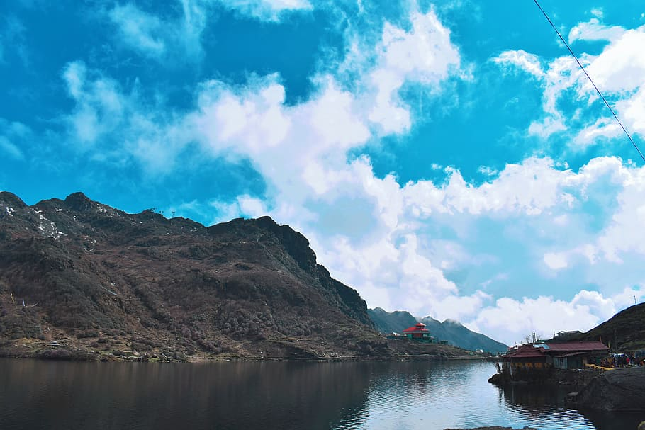
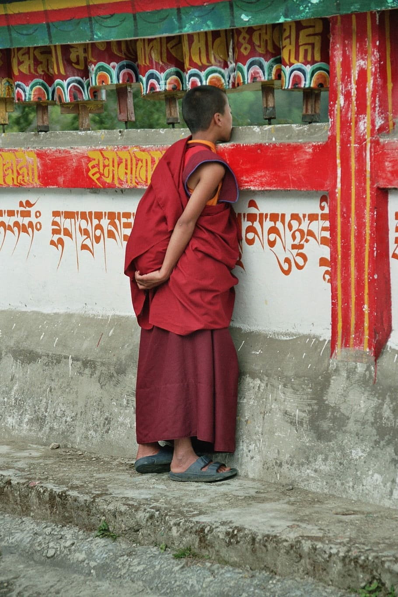
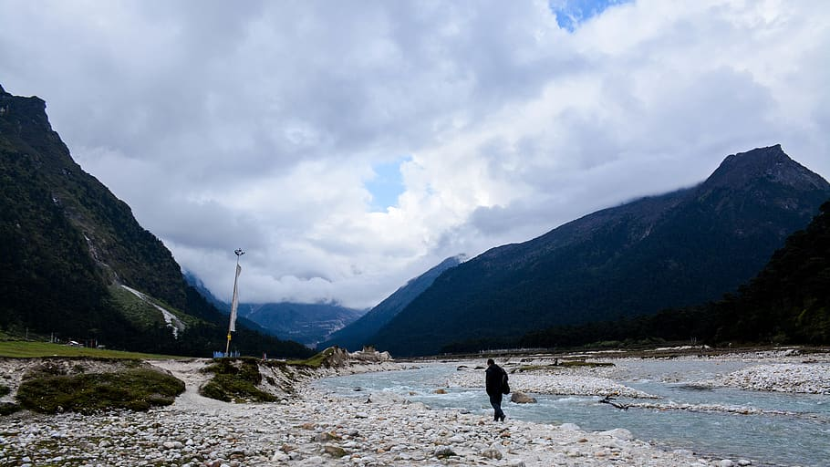

Must-Visit Attractions

Tsomgo (Changu) Lake
Glacial lake at ~3,753 m, ~40 km from Gangtok. Frozen in winter, ringed by high peaks. Permit required for all visitors.
Scenic
High Altitude
Photography
~40 km from Gangtok (permit zone)

Rumtek Monastery
Seat of the Karma Kagyu lineage near Gangtok, known for vibrant murals and serene courtyards. About 23–24 km from Gangtok.
Monastery
Culture
Heritage
~23–24 km from Gangtok

Yumthang Valley
“Valley of Flowers of the East” famed for spring rhododendrons and alpine meadows in North Sikkim. Permit required.
Nature
Trekking
Flowers
North Sikkim (permit zone)

Pelling & Skywalk
Popular base for Kanchenjunga views, ancient monasteries, and the glass skywalk near Chenrezig statue.
Scenic
Adventure
Views
West Sikkim